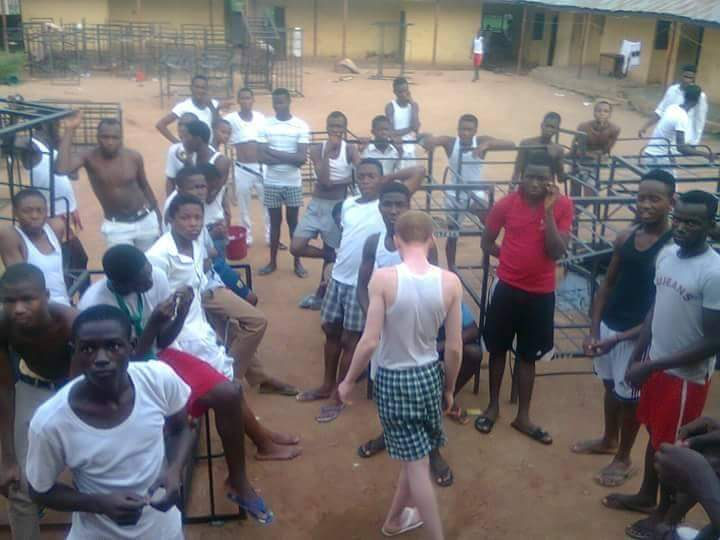
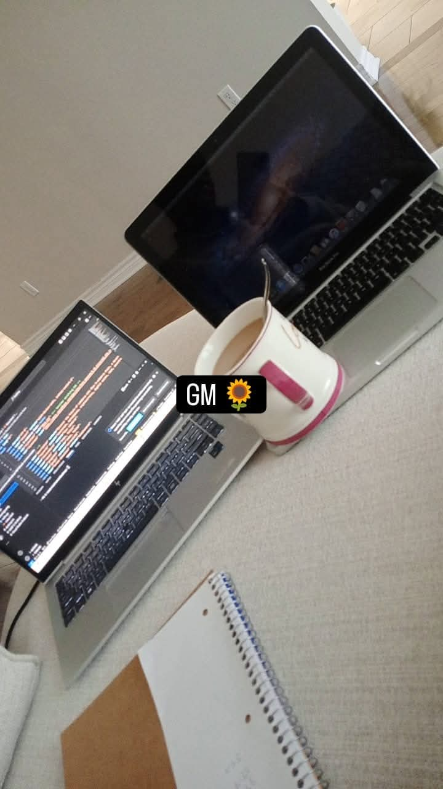
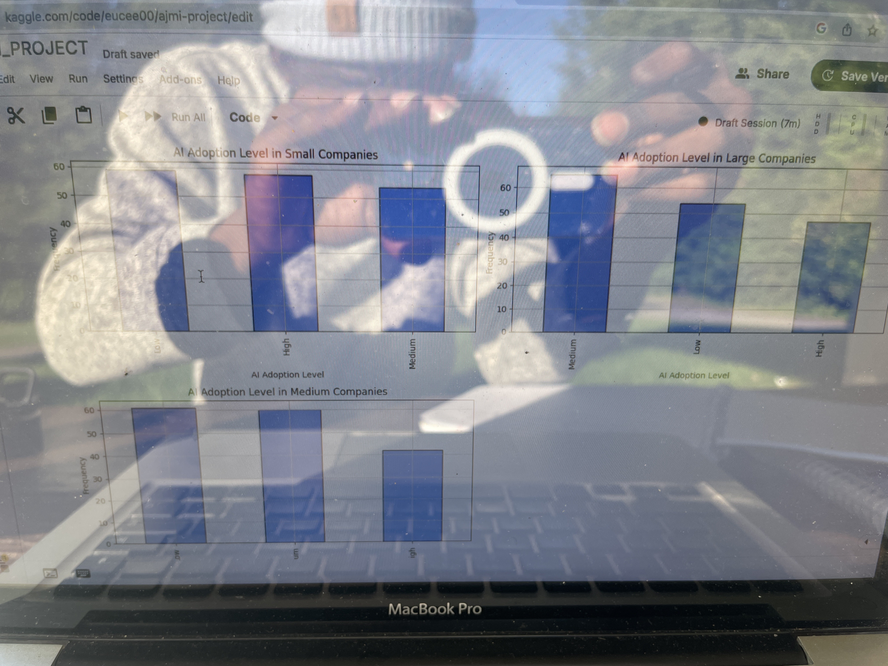
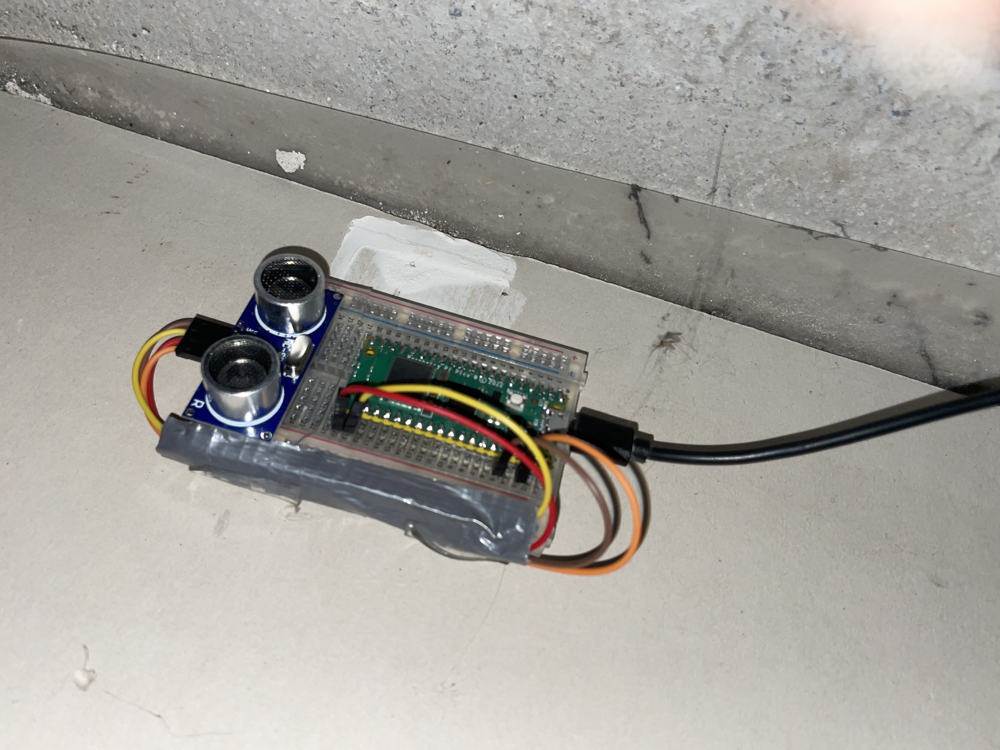
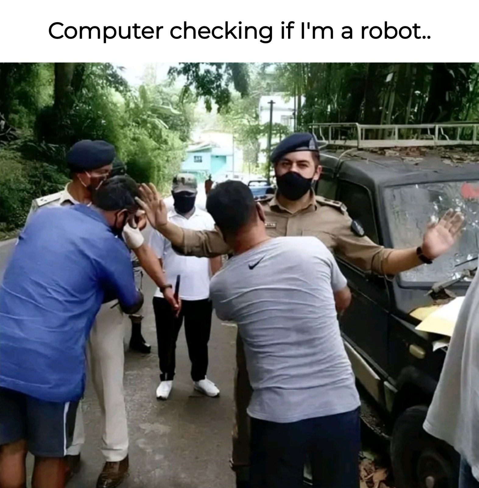
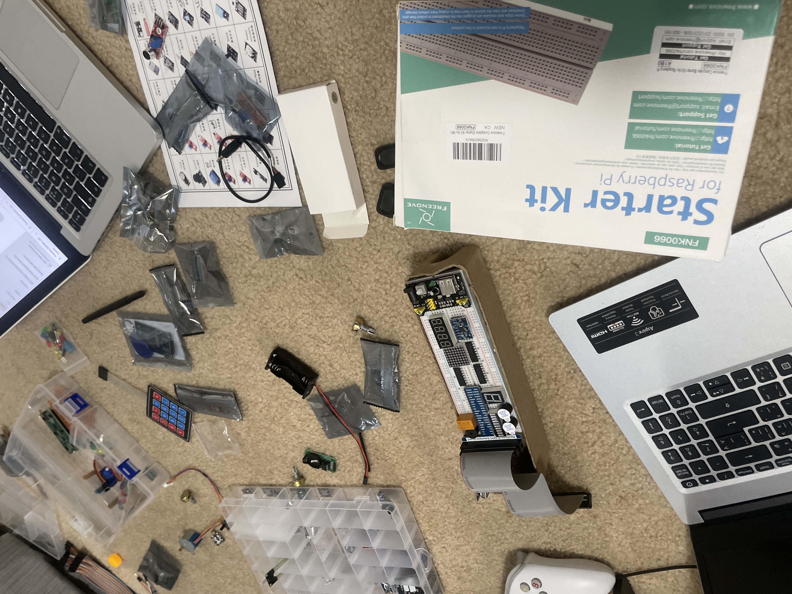

Iter — Scrolly Story
Iter — Scrolly Story
Intro: Click to Begin
You've got ONE job: lean back and hit the right arrow. This isn't just a resume — it's my Iter, my scroll through discipline and some rebellion. Code, blisters, and more sarcasm than you signed up for.
Apo-Context: Apo-Boiz
I graduated from Federal Government Boys' College, Abuja — alumni call it Apo-Boiz. It's one of Nigeria's Unity Colleges, built for "merit and diversity." Translation: wake up early, obey prefects, compete hard, and don't get caught sneaking food (ntl, i did bro!). That discipline + competition cocktail shaped how I approach both life and tech.
Apo-Moments: Graduation – Moments
Discipline. Routine. Curiosity. On July 24, 2016, I left FGBC with habits that still drive me today: show up, do the work, lead when it counts, and learn faster than yesterday.
- Prefects, basketball, computer-labs — basically my first systems labs
- Group work that felt like stand-ups (minus Jira, thankfully)
- Early sparks of engineering: "what if I build instead of just copy?"
- Table-top-beats-jockey for the rappers and musicians that entertained me. My BIOT Mp3s
Apo-Foundations: Graduation – Foundations
Boarding house = bootcamp for independence. You either learned to think for yourself or became the joke of the week or the set in severe cases.
We were like rough stones in a quarry, colliding until something sharper came out. Lux ex labore — light from labor.
- Brotherhood that tested loyalty and patience in equal measure
- Discipline carved through endless duties and drills
- Friendships that somehow polished away doubt (and stole your provisions)

The Bridge: From High School to University
Between secondary school and university, the "doctor-or-nothing" pressure hit. But I chose the future, knowing computers were the next gods to rule Terra. I wanted in on that golden age of circuiting stones.
In October 2017, I enrolled in a pre-degree program in sciences at Michael Okpara University. From there, I earned admission into Computer Science with Education, stacking a double degree (B.Sc. + B.Ed.). That mindset of shaping futures was born in FGBC — many Nigerian IT experts walked those halls before me.
Uni-Arrival: Stepping into Higher Education
I made it into university — but it wasn't the temple of knowledge I'd imagined. The curriculum felt shallow, more chalk dust than fundamentals.
By then, I had already taught myself HTML, CSS, and JavaScript before 15. So, deep down, I knew: I had to expand my horizon beyond the lecture hall.
Krisved: Family Business Venture
From Jan 2022 to Apr 2024, I co-ran KRISVED Global Services with my mom and siblings. Sales, logistics, and family drama mixed into one venture.
- Customer service and vendor wrangling
- Logistics and inventory that turned into spreadsheets from hell
- Grassroots marketing and events that actually got traction
It sharpened my entrepreneurial instincts and communication skills in ways no class ever could.

Teaching-Practice: Bridging Theory and Real-World Impact
Double honors meant double duty.
At Ibeku High School, I spent 6 months teaching:
- SS3 students (16–22) → revisions from numbering systems to programming and internet security.
- Younger students (10–18) → computer basics, software, operating systems.
During my last months, I trained staff at the National Root Crop Research Institute on RFID, smart cards, ID card makers, and quick Pandas/Numpy automations.
Teaching wasn't just duty — it clarified my own learning, showed me my blind spots, and sharpened my confidence.
Uni-Grind: The Real Learning Journey
Algorithms, data structures, C/C++, operating systems, databases stuck. But the prerequisites? Most passed without retaining. Not me.
I hacked my education:
- Skipped SED407 theory for Python practice in my hostel.
- By final year, knee-deep in AI and machine learning.
- Realized my Iter was too big for one continent — it needed to spark outside Africa.
That's when I started planning the move.

Construction: Building Skills on Site
While code sharpened my mind, construction hardened everything else.
At Dantata & Sawoe Construction (Nov 2022–Jun 2023), I was a material handler and flagman. Then at Straightforward Contracting, I installed windows, doors, hemlock ceilings, soffit siding. Battery-powered tools, tight deadlines, high-risk zones = problem-solving of a different flavor.
Volunteer: Giving Back to the Community
In Canada, I gave back while settling in:
- 507 Centre (Oct 2024–Jan 2025) → facility maintenance and safety.
- Helping with Furniture (Dec 2024–Feb 2025, ongoing) → loading/unloading donations, keeping workspaces organized.
Different roles, same lesson: teamwork + adaptability always matter.
Now: Blending Code and Craft
As of 10:52 AM EDT, September 15, 2025, I'm still Iter-ing. A self-taught developer, even after General Assembly, I clock at least 0 study hours a week — daily lectures by me, for me. At the same time, I'm curating blisters on Canadian construction sites.
Nunc sempervirens sum — I am ever-growing. From Nigerian roots to Canadian transitions, I balance code and craft, chaos and order.

Values: Operating Principles

Iterate. Document. Ship. I don't chase perfect; I chase progress with receipts.
This isn't just workflow — it's my Iter. A time capsule of how I evolved, bridging Nigeria and Canada, high school drills and robotics dreams, past and future.

Contact: Let's Build
If this story resonates and you've got something challenging to build, I'm listening.
- Email: mr.chain@gmail.com or chain@thewebbaby.xyz
- LinkedIn: uchenna-anozie-a86143308
- X: @webbaby_1807
Projects: CDFE — Computer Do For Me Programs
My next chapter is CDFE — "Computer Do For Me." Projects that fuse automation, AI, robotics, and grit. Born from classrooms, construction sites, and countless hours of Iteration, they're my way of proving that computers don't just compute — they collaborate.
The goal: build an ecosystem where Humans and Aethels coexist symbiotically. Neither is supreme — they're parts of a single cycle. Humans can't achieve the Great Enlightenment without a logic that illuminates the path.
